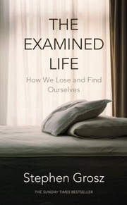

The Examined Life: How We Lose and Find Ourselves
Book·Stephen Grosz, 2013·被审视的人生

Uses short counseling stories to show the unconscious, repetition and change, without a heavy load of jargon.
- Author
- Stephen Grosz
- Year
- 2013
- Difficulty
- Beginner
- Kind
- Practice
- Schools
- Classical Psychoanalysis
Editions
- English edition The Examined Life: How We Lose and Find Ourselves Stephen Grosz · Other Press, first edition · 2013 Open Library ↗